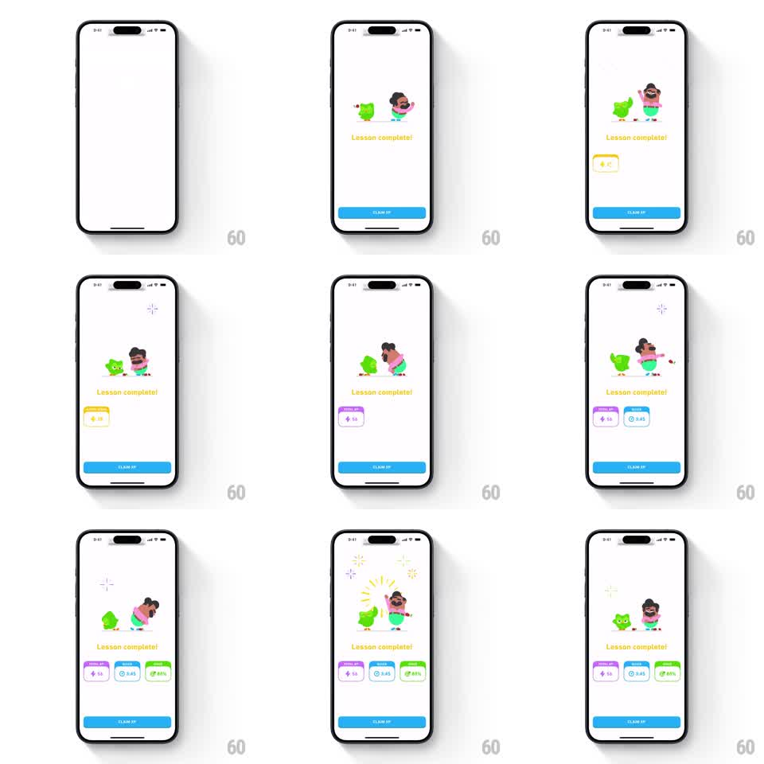

Media
Frame-by-frame

Rebuild this animation 1:1: Duolingo's lesson-complete celebration - Duo and a second mascot burst onto a white screen under a yellow "Lesson complete!" headline while stat cards pop in one by one along the bottom and confetti sparks fly around the pair.

Rebuild this animation 1:1: Duolingo's lesson-complete celebration - Duo and a second mascot burst onto a white screen under a yellow "Lesson complete!" headline while stat cards pop in one by one along the bottom and confetti sparks fly around the pair. ## Integration Integration: stack-agnostic spec - springs given as stiffness/damping, timed motions as duration + curve; map every value to your framework and animation library of choice. ## Scene White full-screen success state. Center stage: Duo owl plus a human mascot (Lily) side by side, yellow "Lesson complete!" headline below them. Bottom: full-width blue CLAIM XP button, always present. Between headline and button, a row of stat cards appears: yellow XP card (+12), purple lightning card, blue timer card, green accuracy card - each a rounded tile with icon and value. ## Motion spec Pattern: staggered celebration entrance with popping stat cards. - Mascots enter from below center with a jump: translateY +40px to 0, spring stiffness ~260, damping ~18, ~450ms, arms raised at the peak. - Headline fades and rises with the mascots (opacity 0 to 1, translateY 10px to 0, 250ms, ease-out). - Stat cards enter one at a time, left to right, ~120ms apart: each scales 0.5 to 1.0 with a bounce (spring stiffness ~320, damping ~20) and slides up ~20px. - With each card landing, a small confetti/spark burst pops near the mascots (4-point star shapes, scale 0 to 1 to 0, ~350ms each). - Finale: a radial ray burst behind the mascots (short dashed rays scaling outward, ~400ms) while both mascots do one more hop. ## Calibration - Total sequence lands in about 2 seconds; the card stagger is the rhythm - do not let cards overlap each other's springs. - Confetti accents are sparse 4-point stars, not particle rain. ## Reduced motion All elements fade in together over 200ms, fully laid out; no jumps, bursts, or stagger. ## Don't miss - The CLAIM XP button never animates - it is the stable anchor the celebration plays above. - Card colors map to their stat (yellow = XP, purple = streak/lightning, blue = time, green = accuracy); keep the mapping.